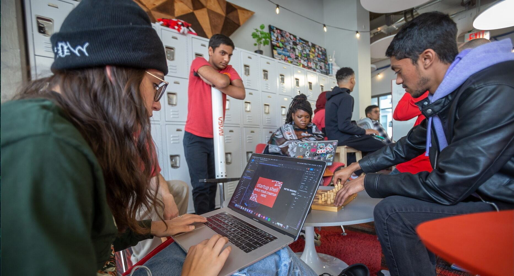
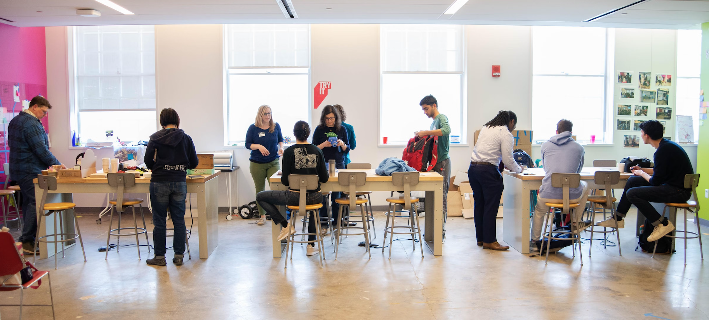
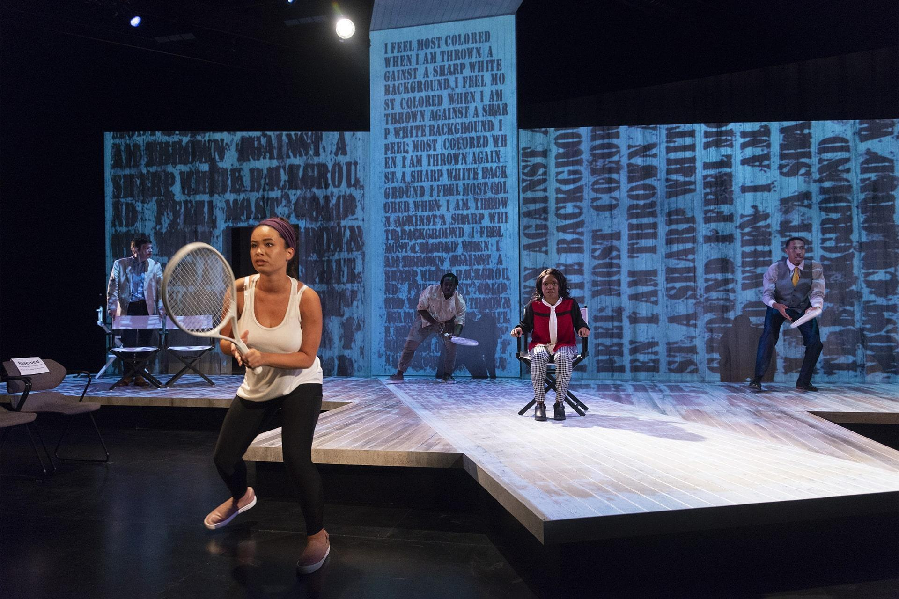

We Reimagine Learning
The University of Maryland is changing teaching and learning to prepare tomorrow's leaders to adapt to the future of work.

Here at UMD, education is edu-action.
Our vibrant ecosystem of innovation in teaching and learning gives students unique opportunities to explore their interests and strengthen their skills for the workforce. Our students are conducting research in world-class labs on campus, interning throughout the National Capital Region, growing their own ventures and collaborating with communities. At UMD, we're preparing the next generation of educators, creators, scientists and problem solvers.
Latest News
Years ranked in the Top 10 for undergraduate entrepreneurship programs
Terps named to Forbes 30 under 30 lists of rising innovators and entrepreneurs since 2011
Courses in innovation LIKE CREATIVITY, ENTREPRENEURIAL MINDSET, SOCIAL VALUE CREATION, And Design thinking
Our ecosystem of innovation in teaching and learning
Launch a funded venture with xFoundry at UMD
Initiated in the university’s E.A. Fernandez IDEA Factory, xFoundry's bold learning experiences include a competition to found a venture to solve a major societal challenge and win up to $2M in investment capital.

ACADEMY FOR INNOVATION AND ENTREPRENEURSHIP
Become an enTERPreneur
A campus hub for courses, programs and workshops on I&E that encourages students to experiment and grows them as changemakers and innovators.

ARTS FOR ALL
Nurture different ways of thinking
Courses, events, research and more fuse the arts with the sciences, tech and other disciplines to spark conversations, understanding, problem solving and action.
DO GOOD ACCELERATOR
Make real impact now
Students supersize their social impact ideas in this collaborative space that offers leadership coaching, mentoring with local businesses and nonprofits, and financial support and training.
PITCH DINGMAN COMPETITION
Practice your pitch for seed funding
The university’s most talented student and alum entrepreneurs face off for more than $150K in seed funding and exclusive access to venture development resources.
Innovating how we teach and learn through new approaches, embracing technology and broadening student communities are the most effective ways to prepare students for their next steps after college. We’re equipping our students with the skills, confidence, and real-world experience to lead the way.
Jennifer King Rice
Senior Vice President and Provost